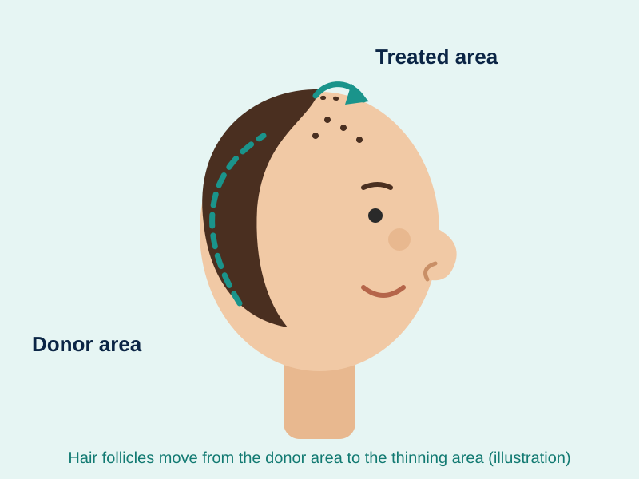

When should you get a hair transplant?
Thinning hair and hair loss are common in men and women, often from the third decade of life onwards. They can result from ageing, trauma or a medical condition, and they can progress if no suitable treatment is started.
Who should consider a transplant?
Patients should consider a hair transplant once they have turned 20 or older, and both men and women can have the treatment. At Cosmo International we recommend a transplant for patients whose hair loss has stabilised.
Key takeaways
- Hair loss is common in men and women and can progress without treatment.
- Both men and women can consider a hair transplant once they are 20 or older.
- A transplant is recommended once hair loss has stabilised.
Start with a consultation
A consultation is the best place to start. Our certified surgeons can explain what is happening with your hair at your age and which course of action suits your situation.
Learn about direct hair transplant in Hyderabad.
Talk to our surgeons
Tell us what you would like to discuss. The clinic will contact you to confirm a time.
Cosmo International Clinic
Hair transplant and skin clinic, Banjara Hills, Hyderabad. This article is general information, not medical advice. Results vary between individuals.